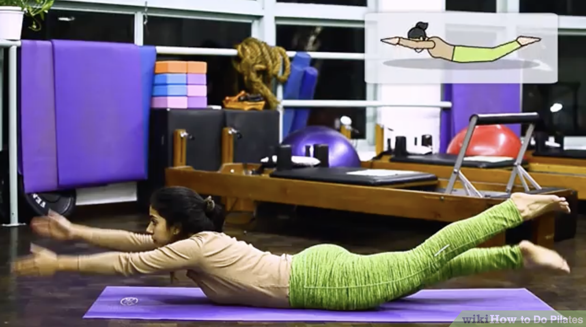

1. Do the swan. Prone means lying flat on the ground on your stomach, and all the prone positions begin with you lying down on your stomach with your forehead resting on the ground. For the swan, place your hands under your shoulders as though you were going to push yourself up. Tuck your elbows in beside your body. Keep your feet hip-width apart. Press your pubic bone into the ground and press into your palms as you lift your face, neck, and chest off the ground, bending at your lower back so you are sitting up like a sphinx. Inhale, exhale, and lower yourself back down. Repeat two more times, lifting yourself slightly higher each time. Always keep the tops of your feet flat on the ground.
2. Go for a swim! Stretch your arms straight in front of you (as though you were swimming) on the ground. Squeeze your thighs and heels together. Lift your head, neck, and chest off the ground. Lift your right arm and left leg as you squeeze your glutes (that's one stroke). Return your arm and leg to the ground, and lift your left arm and right leg (that's two strokes).
- Complete 24 strokes.
3. Make yourself into a T. Lay your arms on the ground beside you and press your feet together. Raise your head, neck, and chest off the ground. Raise your arms off the ground slightly and extend them out perpendicular to your body with your palms facing down.
- Sweep your arms back (still straight) and lift your chest off the ground a little higher as you bring your arms closer to your body. Return to the starting position.
- Repeat four more times, for a total of five Ts.